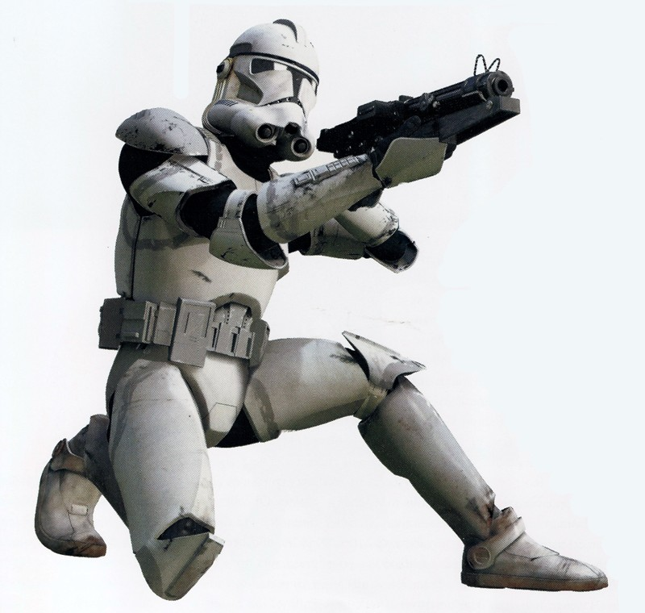
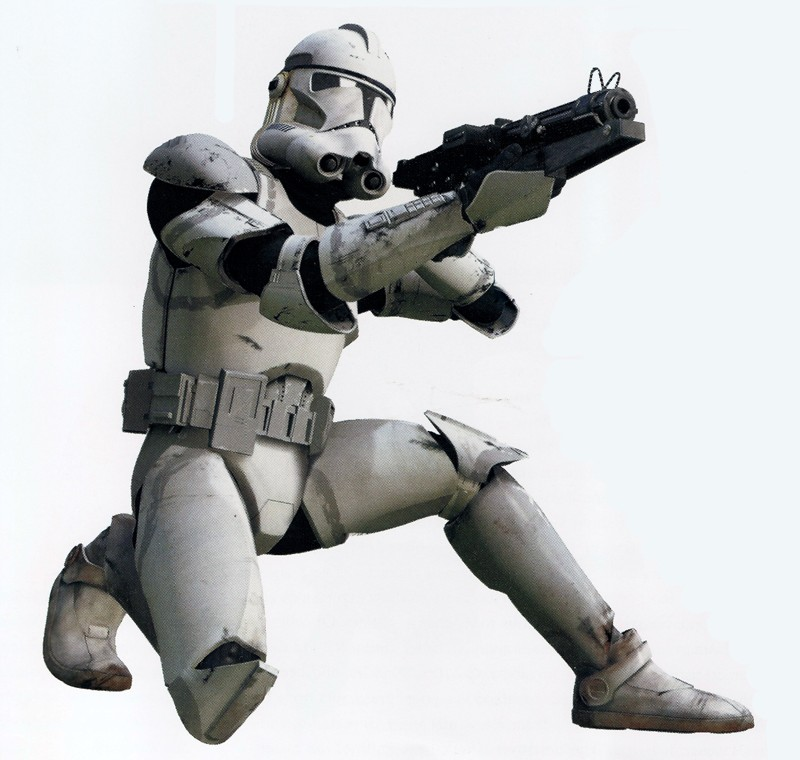

New "Shiny" Clones
These clones were often young clones that are strait from Kamino. Usually, the plain white armor means that they are not part of any particular legion. Although, there are some legions that use plain white armor.
212th Attack Battalion
The 212th Attack Battalion was a Battalion of clone troopers that donned white clone armor with orange markings. They were present at the second battle of Geonosis, Umbara, and Utapau. This battalion was led by General Obi Wan Kenobi.


501st legion
The 501st legion was one of the best in the Grand Army of the Republic. It was lead by General Anakin Skywalker, Comander Ahsoka Tano, and clone Captain Rex. The 501st fought on many battlefronts including Teth, Umbara, and Ringo Vinda.
41st Elite Corps
The 41st Elite corps was an elite group of clones lead by General Yoda, General Lumanara Unduli and her padawan Barris Offee, and the unorthodox jedi Quinlen Vos. They fought at the second battle of Geonosis, and were tasked with renforcing the wookies on Kashyyyk.
 
